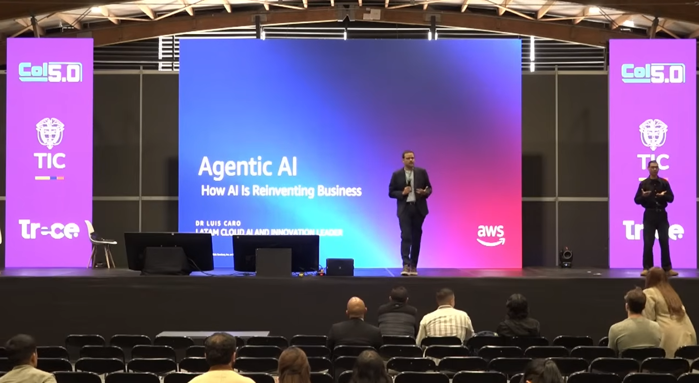
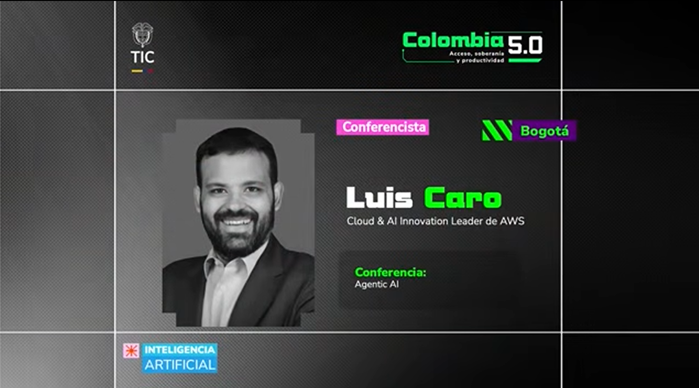
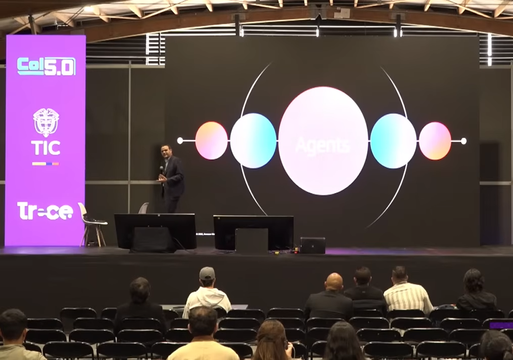
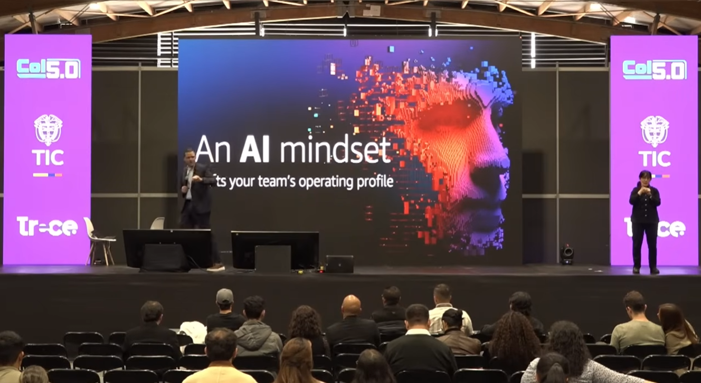
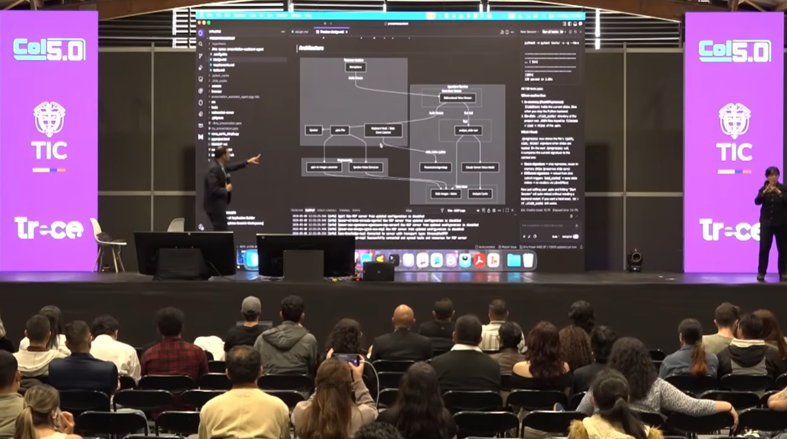
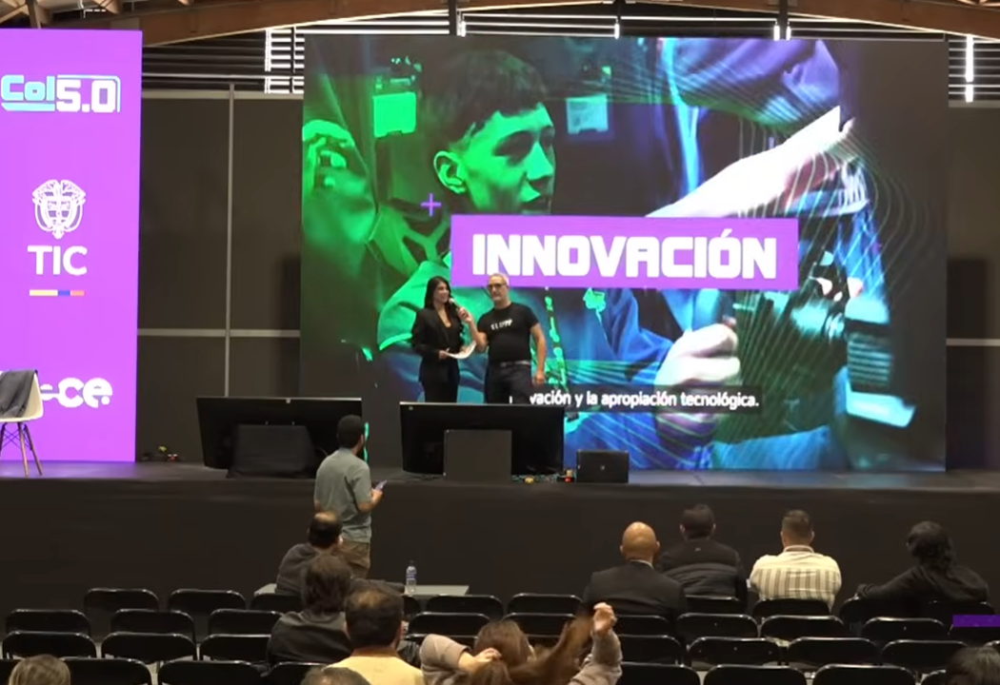
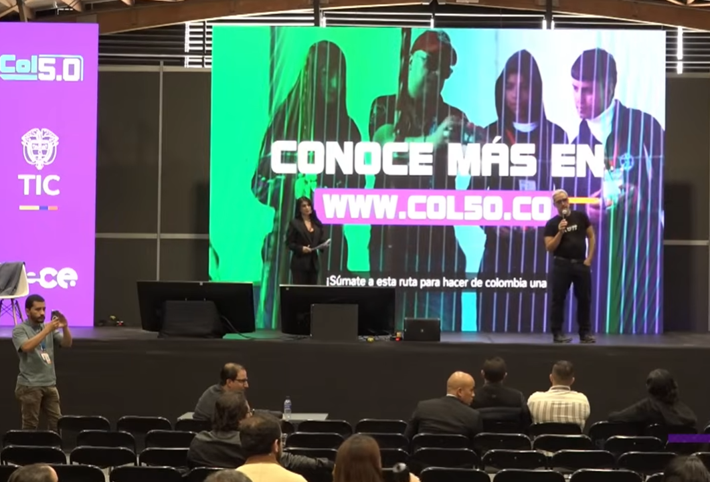
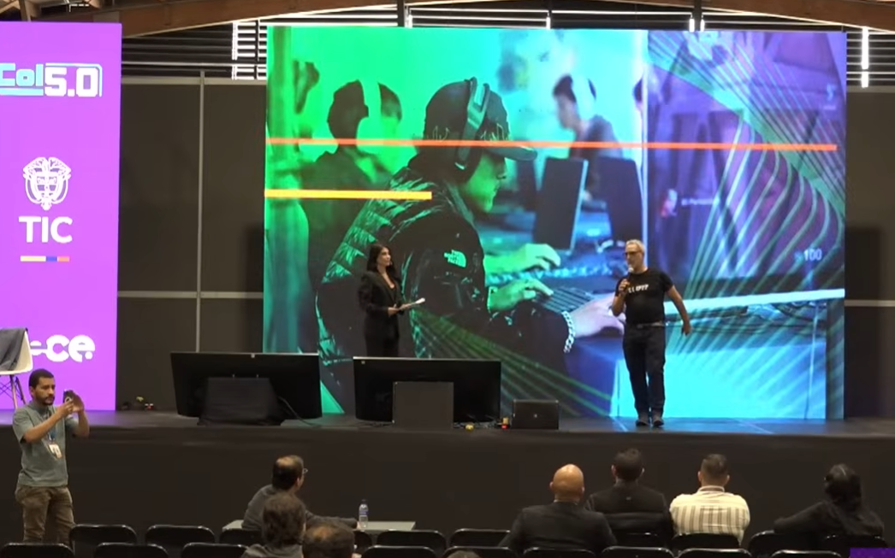
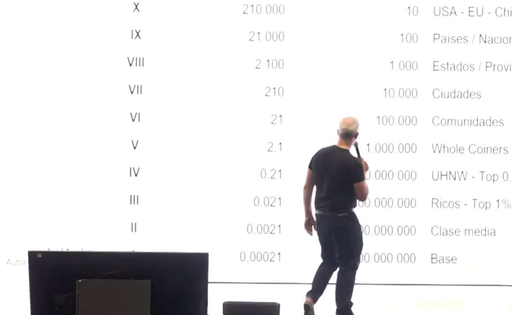
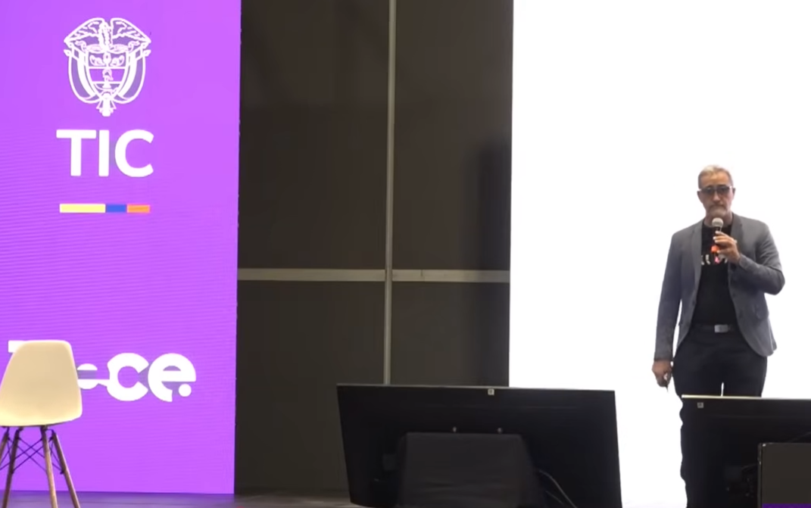

El encuentro de ecosistemas digitales más importante de Colombia y Latinoamérica, organizado por el MinTIC. Inteligencia artificial, soberanía digital, innovación y talento tecnológico en un mismo escenario.

Corferias · 8 mayo 2026Colombia 5.0 es la evolución de Colombia 4.0, una iniciativa del MinTIC que lleva más de una década acercando la tecnología a ciudadanos, empresas y emprendedores. El nombre hace referencia a la "Sociedad 5.0": la visión donde la tecnología resuelve retos sociales reales.
La edición Bogotá 2026 transformó Corferias en un espacio de conferencias, talleres, ruedas de empleo y demos inmersivas, con la participación de expertos de AWS, Google Cloud, Samsung, Ericsson y LinkedIn, además de líderes del ecosistema IA en Latinoamérica.
Para los aprendices del SENA en ADSO, este evento es una ventana directa a las tendencias que van a definir el mercado laboral: agentes de IA, automatización de procesos, soberanía de datos y nuevas arquitecturas de software.
Dos conferencias seleccionadas por su relevancia para programadores en formación ADSO.

Esta fue una de las conferencias más esperadas del día 1. El Dr. Luis Caro, líder de IA en AWS para Latinoamérica, explicó el gran cambio que representa pasar de una IA que solo responde preguntas a una IA que puede planear y ejecutar tareas de forma autónoma.
El mensaje central fue claro: los Agentes de IA son el siguiente nivel del desarrollo de software. Ya no se trata de chatbots con respuestas estáticas — son sistemas que reciben un objetivo, diseñan los pasos para lograrlo y los ejecutan solos, usando APIs, bases de datos y otros agentes.
Para nosotros como aprendices de ADSO, esto cambia cómo vamos a diseñar sistemas en el futuro. Un ejemplo concreto del ponente: pedirle al sistema "genera el reporte de ventas del mes" y que el agente consulte la BD, detecte anomalías, genere la gráfica y entregue el archivo — sin intervención humana en cada paso.



Según la conferencia, todo agente bien construido tiene estos componentes. Como desarrolladores ADSO, estos son los módulos que tendríamos que programar.
Rodrigo Reyes planteó un cambio de mentalidad fundamental para nosotros como futuros desarrolladores: el software no puede vivir aislado del contexto donde opera. El concepto central fue pasar de "islas de código" a Ecosistemas Digitales Integrados.
Para ADSO, esto redefine el análisis de requisitos: el software no solo debe ser funcionalmente correcto, sino también arquitectónicamente viable según el contexto real de despliegue — la conectividad disponible, la infraestructura cloud y el nivel de alfabetización digital de los usuarios.
La conferencia cerró con un mensaje clave: el desarrollador moderno ya no es un programador aislado que recibe un documento de diseño. La Sociedad 5.0 exige analistas con visión de negocio y territorio, capaces de idear sistemas integrales que generen impacto real en la productividad del usuario.





Reyes desglosa la construcción de soluciones robustas en tres dimensiones que deben funcionar de forma sincronizada.
Todo el contenido visual de las conferencias de Colombia 5.0 reunido en un solo lugar.